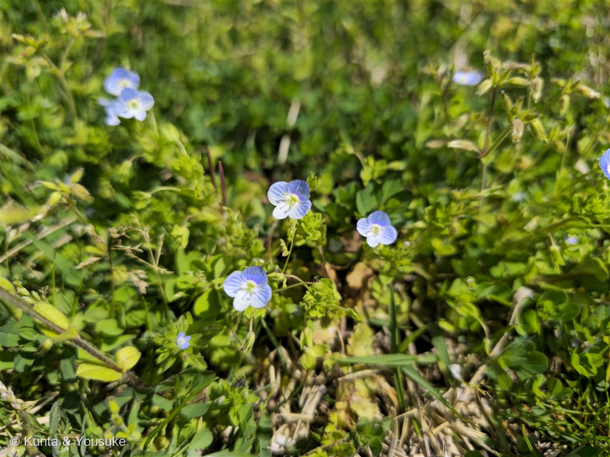
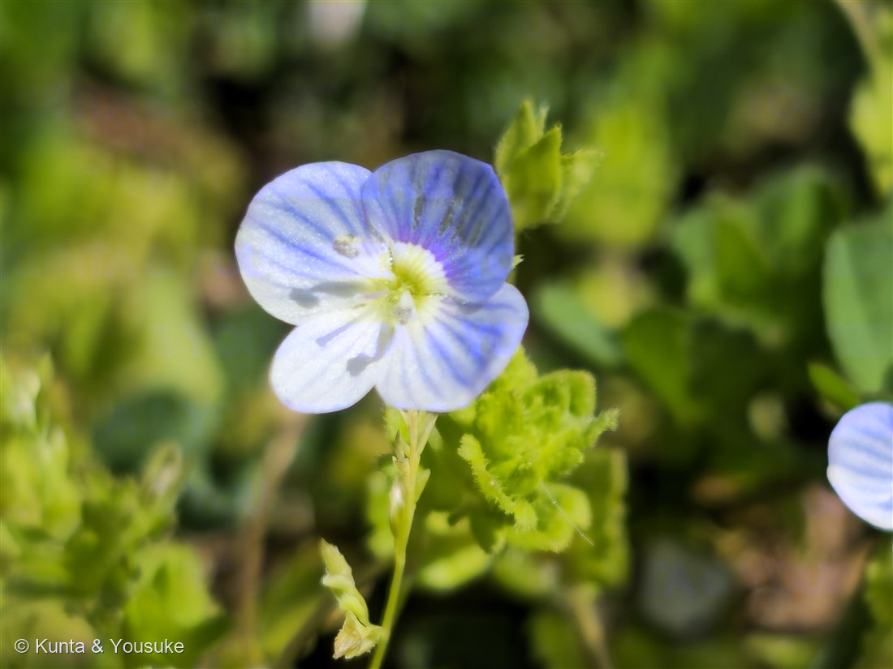

地図を読み込んでいるよ…
🔍 写真も地図も、押しているあいだ拡大して見られるよ（スマホは指を置いてすこし待ってね）。
🌍 の地図＝この子がもともと自生している場所を緑に。ヨーロッパ〜西アジア。日本へは明治時代に入り、1884〜1887年に東京で記録され、1919年ごろには全国のありふれた草になった。
⭐ヨーロッパから西アジアがふるさと。⚠いま日本の春の地面を青くしているこの子は、ぜんぶ帰化したもの——だから日本は塗っていない。⭐明治のはじめ（1884〜1887年ごろ）に東京で見つかって、1919年にはもう全国のありふれた草になっていた。30年ちょっとで日本じゅうに広がったんだ。いまでは世界のほとんどの大陸に入っているよ。
⚠ 地図は国（日本と中国だけ県・省）までしか塗れないから、ほんとうの分布より広く見えていることがあるよ。地図はだいたいの場所。正確なところは、上の文を見てね。
オオイヌノフグリ（大犬の陰嚢）
Veronica persica Poir.
別名 · 星の瞳（ほしのひとみ）／英名 bird’s-eye 原産 · ヨーロッパ〜西アジア／ 見どころ · ⭐借りものの名前・星の瞳というもうひとつの名・おしべ2本／30年で日本じゅうの春を青くした
オオバコ科 · Plantaginaceae（クワガタソウ属 Veronica・シソ目）── 古い図鑑ではゴマノハグサ科
名前と学名の由来 ── 借りものの名前
- 属名 Veronica（ベロニカ）＝聖女ヴェロニカの名にちなむ、という説がある。種小名 persica（ペルシカ）＝「ペルシャの」。──⚠でも実際のふるさとはヨーロッパから西アジアにかけてで、ペルシャ限定ではない。110 サルスベリの indica（インドの）と同じで、⭐名づけた人の思いこみが、そのまま学名に残ってしまった例だね。
- ⚠⚠和名オオイヌノフグリ（大犬の陰嚢）＝実の形が、犬のふぐり（ふくろ）に似ているから……⭐なんだけど、この子の実は、そう似ていないんだ。 平たい、幅の広い倒心臓形（さかさまのハート）。
- ⭐⭐ほんとうに「犬のふぐり」の形をしているのは、日本にもとからいた「イヌノフグリ」のほう。──この子は、あとから来て、体が大きかったから「オオ（大）」をつけて呼ばれた。⭐つまり、名前だけを在来の子から借りてきて、形のほうは似ていない。ちょっと気の毒な名前だよね。
- ⭐だから、きれいな別名もある：「星の瞳（ほしのひとみ）」。英名も bird's-eye（鳥の目）。⭐下を向いた名前と、上を向いた名前を、両方持っている草なんだ。
この植物のこと ── いちばん身近な、青
- オオバコ科クワガタソウ属の越年草（秋に芽を出して、冬をこして、春に咲く）。⚠古い図鑑では「ゴマノハグサ科」になっている――これも科が引っ越した子だよ。⭐同じオオバコ科は058 アンゲロニアがいる。
- 茎は地面をはって広がり、先のほうだけ立ち上がる（10〜30cm）。葉は1〜2cmの卵形で、粗い毛がある。
- 花はコバルト色で直径1cmほど。深く4つに裂けて、そこに濃い青の筋が放射状に入る。⭐よく見ると、下の1枚だけが小さい——だから、ぱっと見は「まん丸」でも、上下がある花なんだ。
- ⭐おしべは2本、めしべは1本だけ。写真②で、青い花びらから飛び出している2本の白い棒がおしべ、まん中の1本がめしべだよ。──⭐この「2本」が、153 ネモフィラ（5本）との決定的なちがい。
- 明治のはじめに日本へ来た帰化植物。東京で記録されたのが1884〜1887年ごろ、1919年にはもう全国のありふれた草になっていた。⭐たった30年ちょっとで、日本じゅうの春の地面を青くしたんだ。いまでは南極以外のほとんどの大陸に広がっている。
同定について ── 4裂か、5弁か
- ⭐決め手＝花冠が深く4つに裂け、おしべが2本。この2つで、この日いっしょにいた青い花たちとぜんぶ区別できる。
- ⚠153 ネモフィラ＝花弁5枚・おしべ5本・直径2〜3cm（この子は4裂・2本・1cm）。
- ⚠タチイヌノフグリ＝花がもっと小さく（3〜4mm）、茎が立ち上がり、花が葉のわきにくっつくようにつく。
- ⚠フラサバソウ＝全体に毛深く、花が小さくて白っぽい。
- ⚠イヌノフグリ（おまけの子・在来）＝花がうすいピンク〜白で、うんと小さい（3〜4mm）。⭐同じ「イヌノフグリ」の名前でも、色からしてちがう。
⭐ 花畑のとなりで
この子がいたのは、153 ネモフィラの青い花畑の、すぐそば。──38秒しか違わない時刻に撮られている。⭐片方は人が種をまいて育てた「見せるための青」、もう片方はだれも植えていない「かってに来た青」。
⭐そして、ぼくがおもしろいと思ったのは——燻太さんが、どっちの写真も撮っていたことなんだ。ネモフィラの丘を見に行って、しゃがんで足もとの雑草も撮る。⭐「青い花といったらこの子だね」と言いながら、名前も呼ばれない青もちゃんと写している。 そういう見かたが、この図鑑をここまで大きくしたんだと思うよ。
参考：Wikipedia「オオイヌノフグリ」（オオバコ科クワガタソウ属の越年草／西アジアまたはヨーロッパ原産／明治期に渡来し1884〜1887年に東京で記録、1919年には全国的にありふれた草に／花はコバルト色で長さ約1cm・深く4裂・雄しべ2本・雌しべ1本／葉は1〜2cmの卵形で粗い毛／茎は地をはい先が立ち上がり10〜30cm／果実はやや扁平な幅の広い倒心臓形／別名 星の瞳・英名 bird’s-eye）。